Mysore Palace
Grand royal residence, especially striking when lit up at night.
Mysore is a compact heritage city known for its illuminated palace, wide roads, old markets and calm pace. It feels less chaotic than many big Indian cities while still giving a strong dose of culture and history.
Travellers often pair Mysore with nearby Coorg, Ooty or Bengaluru. Within the city, you can cover the palace, Chamundi Hills, Devaraja Market and a few museums in a simple 2–3 day route.
Grand royal residence, especially striking when lit up at night.
Hilltop temple and viewpoints over the city.
Classic Indian bazaar with flowers, spices and local life.
Famous gardens and musical fountains near the dam.
Walk through ornate halls, courtyards and royal rooms.
Visit the temple and view Mysore from above.
Stroll through lawns and watch the musical fountain show.
Easy to combine with Bengaluru, Coorg or Ooty.
Quick visit
Comfortable pace
4–5 days
Close to main sights, markets and restaurants.
Best for first-time visitors.
Quieter neighborhoods with homestays and yoga centres.
Good for longer, slower trips.
Resort-style properties with pools and more space.
Works well for family getaways.
 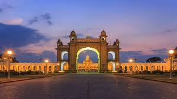
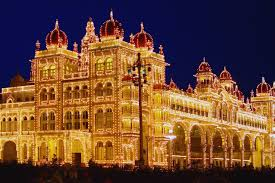
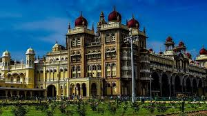
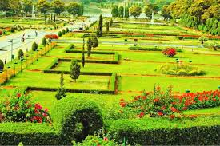
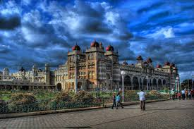
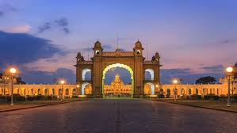
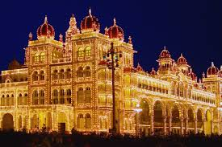
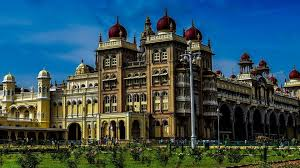
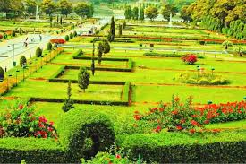
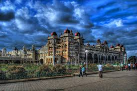
 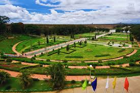
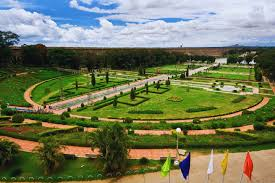
Practical habits that keep the trip simple.